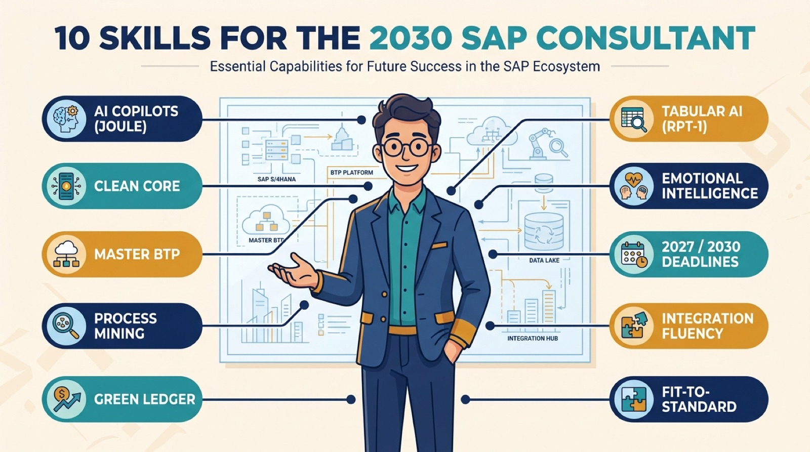

"The most valuable SAP professional of 2030 is not the deepest coder. It is the one who can turn standard software and business goals into a lasting transformation."
— The through-line of the 2030 SAP skills shift
The SAP consultant's job is being rewritten. The next five years fold together an AI wave, a hard support deadline, a "clean core" architectural reset, and a shift from customizing software to redesigning processes, and each of those changes what a great consultant actually does day to day. Drawing on current guidance for the 2030 horizon, here are the ten strategies, technologies, and skills that separate the professionals who will thrive from those who will be left maintaining legacy systems. Think of it as a field map for the next era of SAP work, one you can use whether you are planning a transformation or planning your own career.
1. Supercharge Productivity with AI Copilots (SAP Joule)
SAP Joule is SAP's generative AI copilot, an assistant embedded across SAP applications that answers questions, retrieves data, and guides you through tasks in natural language. For consultants, the promise is concrete: according to the guidance behind this list, Joule can save an average of around 1.5 hours per day and speed up project delivery cycles by up to 14%. Treat it as a real-time pair partner for configuration lookups, documentation, and troubleshooting rather than a novelty. We went deep on what the copilot can and cannot do in our explainer on SAP Joule as an enterprise AI copilot.
2. Enforce a "Clean Core" Architectural Discipline
Clean core is the discipline of keeping the standard ERP core unmodified and building custom logic as separate, cloud-ready extensions that talk to the core only through released, upgrade-stable APIs. The payoff is painless upgrades and true cloud readiness; the cost is giving up the old habit of modifying core code directly. The guidance recommends prioritizing "Level A" fully compliant extensions built on cloud-ready APIs. This principle is the hinge that the next several skills turn on, and it is the same discipline that separates the two SAP editions in our guide to private vs. public cloud delivery and skills.
3. Master SAP BTP as the Innovation Layer
If clean core says "don't touch the core," SAP Business Technology Platform (BTP) is where the touching happens instead. BTP is SAP's platform for application development, automation, and integration, the place you build the extensions and connections that used to live inside the ERP. Mastering it means you can deliver "side-by-side" innovation, new apps and automations running alongside the core, without ever compromising the stability of the system of record. In practice, BTP fluency is becoming the single most bankable technical skill in the SAP ecosystem.
The Pattern Behind Skills 2 and 3
Clean core and BTP are two halves of one idea: keep the engine standard, and do all your custom work in a separate, upgrade-safe layer. A consultant who internalizes this stops asking "how do I change SAP?" and starts asking "how do I extend around it?" That mental switch is the defining technical move of the 2030 era.
4. Adopt Data-Driven Business Transformation (Signavio)
You cannot improve a process you cannot see. SAP Signavio is SAP's process transformation suite, and its core technique is process mining: analyzing the digital footprints your systems already leave behind to reconstruct how work actually flows, bottlenecks and detours included. The guidance frames process observability as a key differentiator, noting that only about 6% of organizations are currently considered leaders in transformation. Being the consultant who can show a client the real, data-grounded shape of their processes, rather than the idealized version in a slide deck, is a genuine edge.
5. Pivot to Transactional Sustainability (Green Ledger)
Sustainability is moving from a separate reporting exercise into the transactional core. SAP Green Ledger embeds emissions data directly into core transactional systems, so that a carbon footprint is captured alongside the financial record of a transaction rather than reconstructed later from spreadsheets. The powerful idea here is "environmental accounting" treated with the same rigor, auditability, and discipline as corporate finance. As regulation tightens, consultants who understand how to run carbon as a ledger, not a report, will be in demand.
6. Use "In-Context Learning" for Analytics (SAP RPT-1)
This is one of the most technically exciting shifts. SAP RPT-1 (Relational Pre-Trained Transformer) is SAP's tabular foundation model, a model pre-trained to make predictions on structured business tables through in-context learning, meaning it predicts from the data you show it at runtime rather than being trained on your dataset first. That "zero-training" approach enables rapid predictive prototyping on financial, inventory, or HR data, with the guidance citing high accuracy in the 91–96% range, and SAP's own benchmarks reporting it can cut errors roughly in half versus narrow models in some domains. If the concept is new to you, we wrote a beginner's guide to tabular foundation models and how in-context learning works.
7. Cultivate High Emotional Intelligence (EQ)
As AI absorbs more of the mechanical work, the distinctly human skills rise in value, not fall. The guidance singles out critical thinking and emotional intelligence (EQ), the ability to read a room, build trust, and defuse conflict, as the qualities that turn a technical expert into a leader clients want to keep. In a world where anyone can prompt a copilot for a configuration answer, the consultant who can navigate a tense steering committee and hold a long-term partnership together is the one who becomes irreplaceable.
The Counterintuitive Core of the List
Half of these ten items are technologies, but the ones that will most reliably protect a career are the human ones: emotional intelligence, integration thinking, and the transformation-partner mindset. AI is commoditizing technical answers, which paradoxically makes judgment, trust, and communication the scarcest and most valuable skills of all.
8. Navigate the 2027 and 2033 Support Deadlines
The hard date driving all of this is real: mainstream maintenance for SAP ECC 6.0 ends on December 31, 2027. Consultants must be able to advise clients on transition paths with clarity. It is worth being precise about the much-discussed "2033" lifeline: it is not a blanket extension of ECC support, but a conditional RISE with SAP "private edition, transition option" aimed at very large, complex ECC customers, available to purchase from 2028 and usable from 2031 to 2033, and it requires moving to the SAP HANA database before the end of 2030. Most mid-size organizations will not qualify or want that lock-in. For the full picture, see our breakdown of the ECC end-of-support deadline and what it really means.
9. Develop "Integration Fluency" for Career Growth
The era of the single-module specialist is closing. Integration fluency means understanding how value and data flow across module boundaries, how a materials management (MM) decision ripples into finance (FI) and controlling (CO), or how extended warehouse management (EWM) connects to the rest. This cross-module literacy is what separates a configurator from a Solution Architect, the role that designs how the whole landscape fits together. If you want a promotion path, this is the skill that most directly unlocks it.
10. Champion the "Fit-to-Standard" Mindset
Finally, the mindset that ties the list together. Fit-to-standard means redesigning and simplifying business processes to align with SAP's standard capabilities, rather than bending the software to preserve every legacy habit. It is the behavioral counterpart to clean core, and it reframes the consultant's identity: from "system implementer" who bolts on customizations, to "transformation partner" who aligns business goals with what standard ERP already does well. This is the same shift toward a redesign-first operating model we explored in why AI stalls at scale without an operating-model rethink.

The Ten at a Glance
| # | Strategy / Skill | The One-Line Why |
|---|---|---|
| 1 | AI Copilots (Joule) | Reportedly ~1.5 hrs/day saved, up to 14% faster delivery |
| 2 | Clean Core | Upgrade-stable, cloud-ready systems via Level A extensions |
| 3 | Master BTP | The safe layer for all custom innovation |
| 4 | Process Mining (Signavio) | Only ~6% of orgs are transformation leaders |
| 5 | Green Ledger | Carbon accounted with financial-grade discipline |
| 6 | Tabular AI (RPT-1) | Zero-training predictions, ~91–96% accuracy |
| 7 | Emotional Intelligence | Trust and judgment AI cannot replicate |
| 8 | 2027 / 2033 Deadlines | ECC ends Dec 31, 2027; RISE transition to 2033 |
| 9 | Integration Fluency | Cross-module thinking unlocks the architect role |
| 10 | Fit-to-Standard | Redesign processes instead of customizing software |
How to Actually Use This List
Do not try to master all ten at once. A more realistic path is to anchor on one item from each of the three groups they naturally fall into. Pick one AI or data capability to get genuinely hands-on with (Joule, BTP, or RPT-1 are the highest-leverage starting points). Pick one architectural discipline to internalize until it changes how you design (clean core and fit-to-standard are really the same habit viewed from two angles). And deliberately invest in one human skill, because these compound slowly and cannot be crammed before a project. The consultants who will define 2030 are not the ones who know the most transactions. They are the ones who paired a modern technical toolkit with the judgment to use it in service of a real business outcome.
The common thread across all ten is a single migration of identity: from someone who makes the software do unusual things, to someone who helps a business run better on software that stays standard, stable, and AI-ready. That is a more valuable role, and a more durable one. The deadline in 2027 is what forces the move; these ten skills are what make it a promotion rather than a scramble.